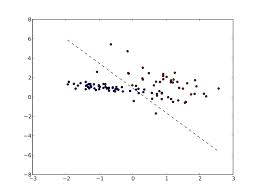

Introduction to Naive Bayes Classifiers
What is a Naive Bayes Classifier?
Naive Bayes Classifier is a probabilistic classifier which heavily relies on the Bayes principle and the Independence Assumption to classify given data into specified groups based on certain features of the input data.A more descriptive term for the underlying probability model would be "independent feature model".
In simple terms, a naive Bayes classifier assumes that the value of a particular feature is unrelated to the presence or absence of any other feature, given the class variable. For example, a fruit may be considered to be an apple if it is red, round, and about 3" in diameter. A naive Bayes classifier considers each of these features to contribute independently to the probability that this fruit is an apple, regardless of the presence or absence of the other features.
For some types of probability models, naive Bayes classifiers can be trained very efficiently in a supervised learning setting. In many practical applications, parameter estimation for naive Bayes models uses the method of maximum likelihood; in other words, one can work with the naive Bayes model without accepting Bayesian probability or using any Bayesian methods.

The above image is an example of how a NBC classifies data.